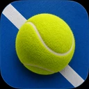
Tennis Score Wizard
使用 Apple Watch 記錄網球比分，可搭配或不搭配 iPhone
在 Watch 上記分 · 在 iPhone 上深入檢視
記錄每一分，讀懂每場比賽。
Pro 結合 Apple Watch 即時記分與 iPhone 比賽分析。您可以補錄或修改已打過的比賽，檢視對手交鋒和比賽亮點，並分享結果。如果只需要手錶 App，可選擇 Standalone。兩款 App 都能回顧每月和每年的比賽活動。
自動比賽統計 靈活的比賽賽制
對手交手記錄 發球與接發球 破發點 「健康」中的體能訓練 即時心率 iCloud 同步
在 iPhone 上補錄比賽 比賽資訊與亮點 月度與年度總結
選擇適合您的 Tennis Score Wizard
Pro 將 Apple Watch 記分與 iPhone 比賽分析結合在一起。如果只需要手錶應用，可以選擇獨立執行的 Standalone。兩款應用都能透過 iCloud 同步已儲存的比賽。
Pro 網球記分與比賽統計
Pro 包含完整的 Apple Watch 記分應用和 iPhone 比賽分析功能。您無需另行購買 Tennis Score Wizard（Standalone）。
在 Apple Watch 上靈活設定比賽並即時記分 在 Apple Watch 上檢視歷史、統計、體能訓練和複雜功能 在 iPhone 上檢視月度與年度總結、對手交鋒並分享 從 App Store 下載 版本 1.8 Standalone 僅 Apple Watch 直接安裝到 Apple Watch，在手腕上完成整場比賽的所有操作，無需 iPhone 配套 App。
One Set、Short Sets、No‑Ad 和 Custom Set 自動統計、同步的對手選擇及 iCloud 比賽同步 按年、月篩選 Watch 比賽歷史，並檢視月度和年度總結 可選擇將體能訓練儲存到「健康」App 從 App Store 下載 版本 1.11
比較功能 ↓
Pro 體驗
完整體驗，雙螢幕呈現。
Pro 包含完整 Watch 應用，以及 iPhone 的補錄、球場、對手交鋒、亮點、統計和分享。
賽場 · Apple Watch
完整的比賽體驗盡在您的腕間。
設定比賽、記錄每分得分、追蹤發球位置、使用「撤銷」功能、記錄訓練資料、檢視歷史和統計資料，以及透過複雜功能啟動應用——與 Standalone 完全一致。
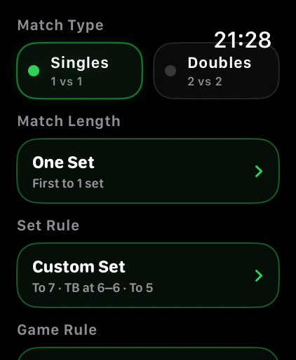
設定
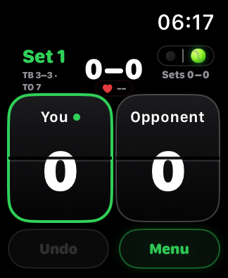
即時計分
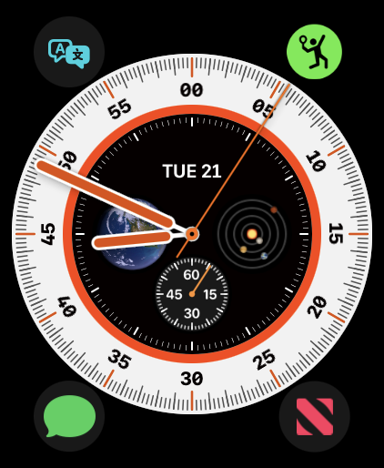
複雜功能
同步
球場之外 · iPhone
需要時，隨時可切換至更大檢視。
回顧 Watch 比賽或直接在 iPhone 新增結果，把球場與備註儲存在結果旁，檢視實際記錄的統計和訓練資料。
01
功能齊全的 Apple Watch 應用
Standalone 應用中的所有功能在 Apple Watch 上均可使用。
02
同步的比賽歷史記錄
您儲存的比賽資料可在 Apple Watch 和 iPhone 之間同步。
03
大螢幕分析
在 iPhone 上檢視比分，以及發球、接發球、破發點、比賽走勢和搶七統計。
04
可分享的比賽結果卡片
分享含最多六個亮點及可選球場資訊的比賽、表現概覽或當前趨勢。私人備註不會公開。
Pro 1.8 · Standalone 1.11 每月回顧，全年精彩，寫下你的網球故事。 從單週、整月到全年，回顧你儲存的比賽。兩款 Apple Watch 應用均提供月度和年度總結。Pro 還可在 iPhone 的大螢幕上檢視並分享總結卡片。
01 · PRO · IPHONE 看看這個月打了多少場。 每週活動圖用不同顏色區分勝場、負場和中途結束的比賽。將比賽場數和勝率與上月比較。每週的起止日期以裝置的日曆設定為準。
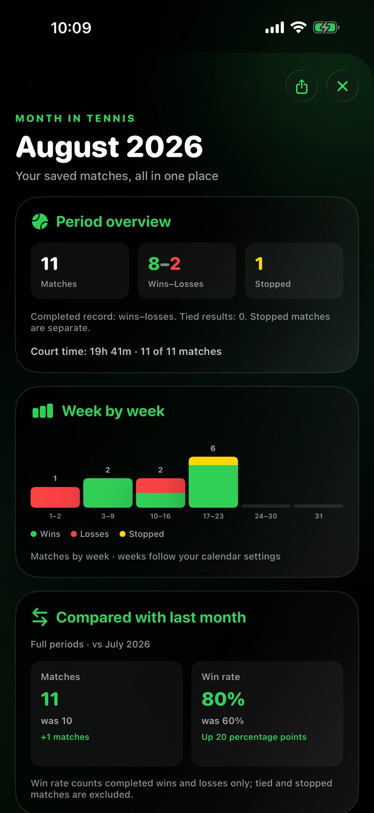
02 · PRO · IPHONE 縱覽全年。 按月檢視比賽活動，與去年比較，並回顧所選時段獲得的成就。年度總結卡片也可分享。
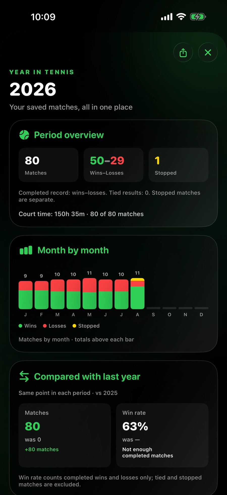
03 · 兩款 WATCH 應用 抬腕檢視總結。 在歷史記錄中開啟 Month in Tennis 或 Year in Tennis，檢視已儲存比賽的場數、結果和成就。
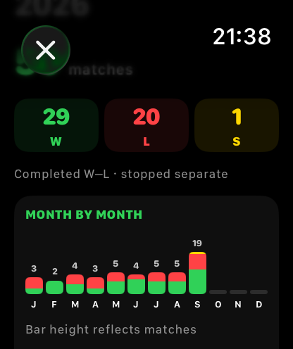
檢視所有更新 → 瞭解月度和年度總結 →
Pro 的 iPhone 端
從每場比賽到整體表現
Watch 記分或 iPhone 輸入結果。檢視歷史、日曆、可用統計和隨時間積累的表現。
比賽詳情 從最新結果進入完整歷史和比分。Watch 比賽可有自動逐分統計，手動比賽只顯示您提供的資訊。
最新及近期比賽
開啟 Pro 檢視最新結果和近期比賽，既包括 Watch 記錄，也包括 iPhone 新增的比賽。
完整比賽歷史記錄
瀏覽完整結束、中止和打平的比賽，檢視型別、結果、總局數及已知時長。
比賽亮點
顯示所有儲存資料能夠證實的亮點，包括落後兩盤逆轉、勝場里程碑、最長連勝和接發最佳。歷史亮點反映應用中的記錄，不代表整個職業生涯。
結果中的決勝搶七/搶十 決勝搶七/搶十會與常規盤、盤數結果和總局數分開顯示。
發球、接發球與破發點
分析發球與接發球表現、比賽走勢與節奏，以及破發點情況。
訓練洞察
在 iPhone 上檢視訓練時長、平均心率、最高心率和活動能量。
日曆 檢視比賽日期，回顧同一天進行的多場比賽，並在詳細月曆和全年總覽之間切換。
月檢視 勝利、失敗和中途停止的比賽都會顯示在實際比賽日期下。
年檢視 縱覽整個賽季，檢視每個有比賽月份的比賽總數和結果。
表現統計 選擇 7 天、30 天、3 個月、1 年或全部時間，再按全部、單打或雙打篩選，無需額外錄入資料。
表現概覽 根據所選篩選條件檢視比賽數、勝率、場上時長、盤數、中途停止的比賽和近期結果。
競技狀態與比賽特徵 檢視連勝或連敗、決勝盤結果、盤與局勝率、先贏第一盤後的勝率以及逆轉獲勝。
發球、接發球、關鍵分與訓練 結合破發點、比分走勢、心率和活動能量，瞭解發球與接發球表現。
決勝搶七/搶十表現 僅在有結果時顯示總戰績、勝率，以及 7 分制和 10 分制戰績。
表現趨勢 結合每月比賽數量和近期月度摘要，跟蹤勝率、得分率、發球局勝率和接發球局勝率的變化。
勝率趨勢 透過最多五場符合條件比賽的滾動視窗，瞭解近期比賽結果的走向。
發球與接發球趨勢 在圖表中切換檢視勝利、得分、發球局獲勝和接發球局獲勝。
iPhone 版 Pro 與兩款 Watch 應用同步
記錄整場比賽，
補錄已打過的比賽，需要時再修改。記下球場與比賽環境，分享值得回味的時刻。這些資訊會與 Apple Watch 的比賽紀錄保存在一起。
01 · 補錄已進行的比賽
已經打過，也能留下記錄。
在 iPhone 上輸入各盤比分；如果記得，也可以填寫搶七分數。完整結束、中途停止或打平的比賽都能儲存。可填寫開始和結束時間，也可將時長留空。
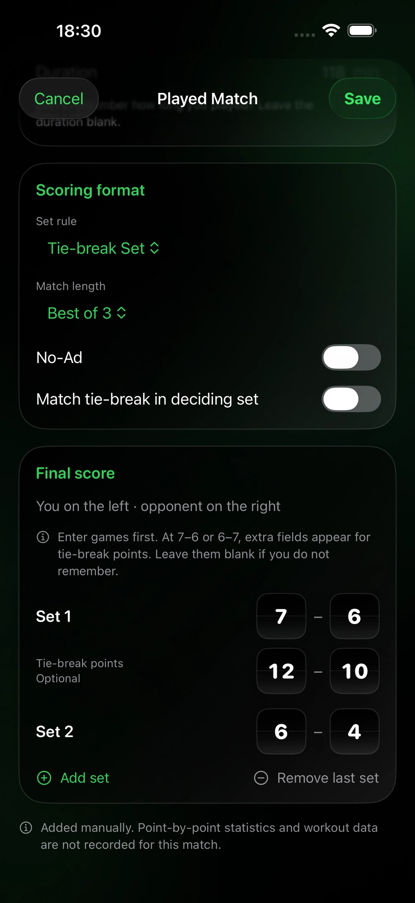
02 · 留住比賽細節
每片球場，都有一段故事。
新增場地材質、室內或室外、俱樂部、球場和私人備註。可重複選擇最近使用或收藏的球場，也能補充之前用 Watch 記錄的比賽。
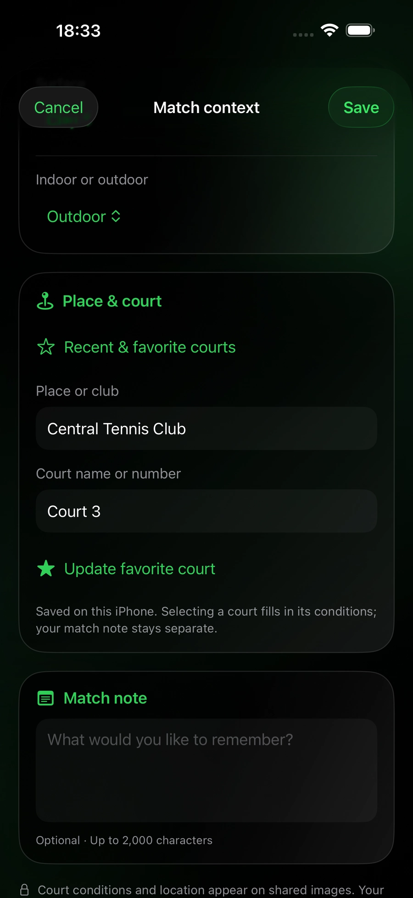
03 · 發現比賽亮點
更多值得記住的瞬間。
比賽詳情會顯示資料能夠證實的所有亮點，包括逆轉、個人最佳和勝場里程碑。分享卡片最多呈現其中六個較有看點的亮點。
比賽亮點
每場比賽，都有閃光時刻。
逆轉、膠著的搶七、勝場里程碑和個人紀錄。透過 44 張示例卡片，瞭解 26 種比賽亮點。
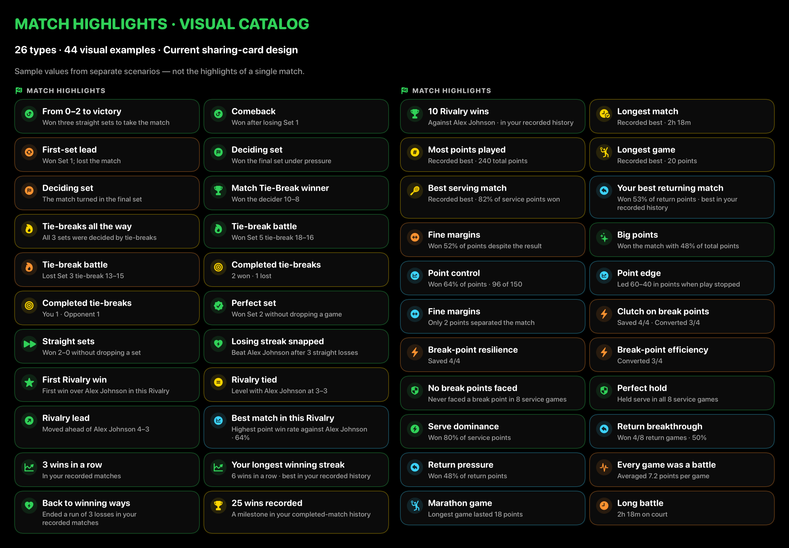
手動新增的比賽 · iPhone
比分輸錯了？保留比賽，修正資訊。 開啟手動新增的比賽，輕點「編輯比賽」。無需刪除比賽後重新輸入，即可修改日期、時間、規則或比分。
儲存後會更新同一條記錄，包括手錶歷史中的記錄。透過 Apple Watch 記錄的比分不會被修改。對手關聯和球場資訊透過各自的入口編輯。
瞭解比賽的新增與編輯 → 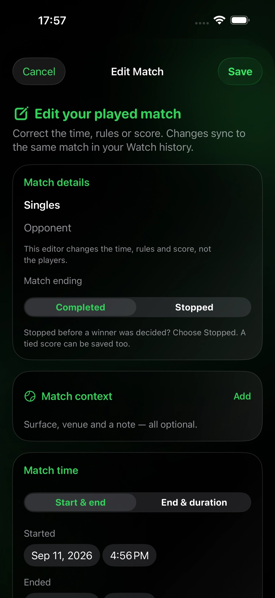
兩款 Watch 應用均支援
在 iPhone 上新增，
會。配對的 Pro 手錶會更新同一場比賽；使用同一 Apple 帳號時，修改也可透過私有 iCloud 同步到 Standalone。請更新應用並等待同步完成。相關統計和基於歷史記錄的亮點會採用修正後的結果。比賽仍會標明為手動新增，不會推算出未記錄的逐分或體能訓練資料。
這些比賽明確標為手動新增 ，只顯示儲存的結果，不展示沒有資料的逐分統計或體能訓練卡片。
瞭解手動錄入 →
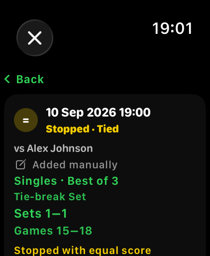
Match Flow · Pro 兩款手錶應用均支援 Momentum
回顧比賽是如何進行的。 如果比賽儲存了可靠的逐分記錄，Match Flow 就能呈現每局的過程。手錶中新記錄的比賽會保留這一順序。對於舊比賽和手動新增的結果，不會根據最終比分編造缺失的得分。
01 · MOMENTUM 看清每次轉折。 綠色和紅色柱條表示每局的勝方。高度反映記錄的得分次數；旁邊的小卡片顯示該局結束後的局分。
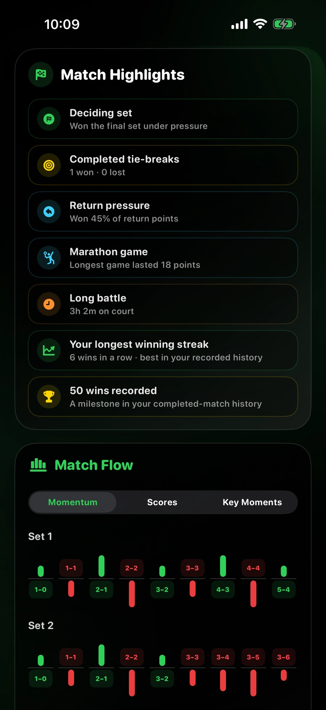
02 · SCORES 逐局檢視比分。 檢視每局結束後的比分、局數和記錄的得分次數。比賽期間無需增加操作。
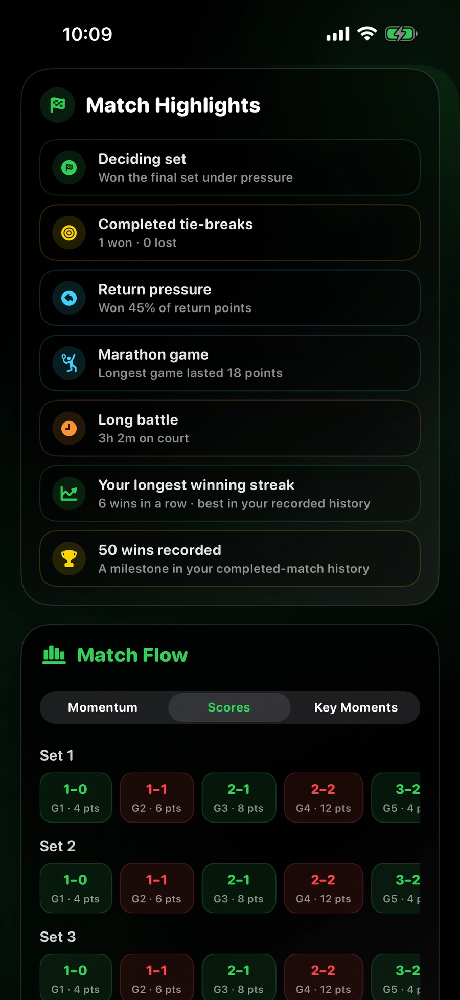
03 · KEY MOMENTS 找到關鍵時刻。 只要逐分紀錄足以支持，就能看到長局、破發等關鍵時刻，以及當時的比分和局數。
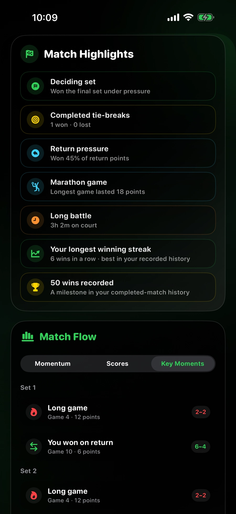
兩款 Watch 應用
手腕上也能回顧。 手錶歷史透過緊湊的 Momentum 圖表展示每局與累計比分。如果沒有可靠的逐分記錄，就不會顯示該模組。
瞭解 Match Flow → 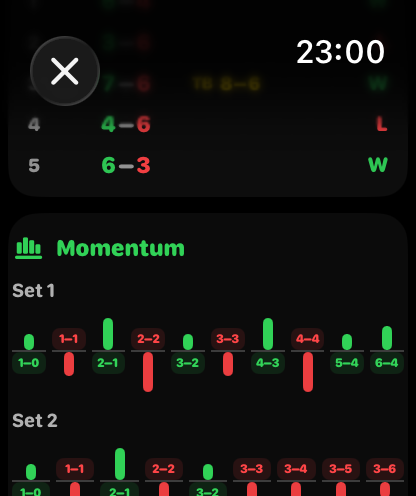
Pro · iPhone
將比賽歷史儲存為檔案。 您可以匯出 CSV、Excel 或 PDF 報告，也可以在 Pro 中建立可供日後恢復的 JSON 或 ZIP 備份。匯入時不會重複新增已有比賽，也不會恢復此前刪除的比賽。
匯出與備份指南 → 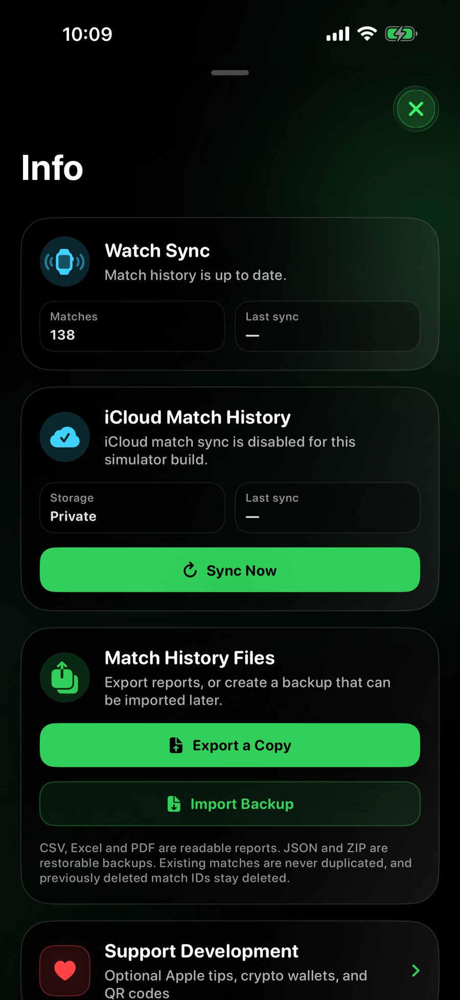
對手交鋒 每位對手，都有一段故事。 在單打比賽前選擇已儲存的對手，Tennis Score Wizard 會自動建立私密交手記錄。比賽結果、關鍵分、逆轉、連勝、體能資料和每次交手都集中在同一檔案中。
瞭解對手交鋒 交手記錄目前僅統計單打比賽。雙打仍可正常記分，但不會關聯到單個對手。
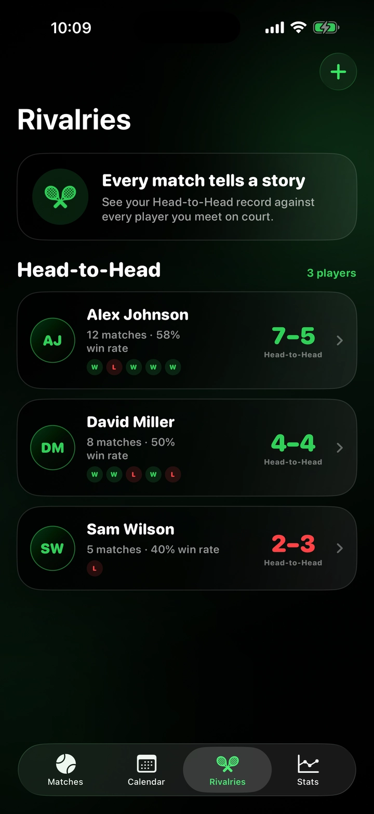
01 · 場上 選好對手，然後專心比賽。 設定單打比賽時，選擇「訪客」或已儲存的球員。簡稱會顯示在即時記分介面；您照常點選記分，交手記錄便會自動生成。
在 iPhone 版 Pro 中建立和管理球員 透過私密 iCloud 同步將列表傳到 Apple Watch 之後為舊的單打比賽指定對手 讓訪客比賽不計入交手記錄 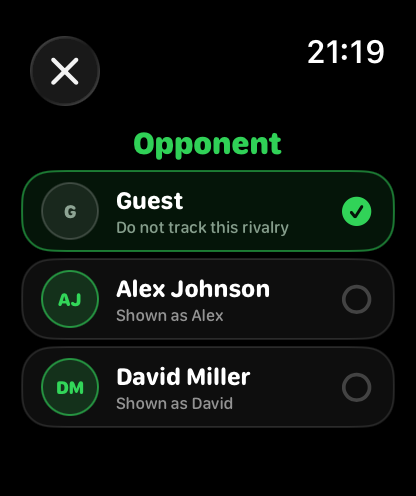
選擇訪客或已儲存的球員 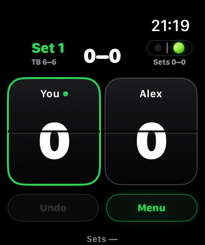
比賽中顯示所選對手 02 · 完整交手檔案 一位對手，多維分析。 可按全部時間、今年或最近 30 天篩選。將近期狀態與整個週期對比，開啟每次交手，並且只顯示實際記錄過的統計。
交手戰績 有明確結果的比賽、勝場、盤、局、搶七和決勝局搶十。
比賽表現 得分、保發率與破發率、發球、接發球和關鍵分。
規律與體能 先丟一盤後的逆轉勝、連勝、上場時間、心率和活動能量。
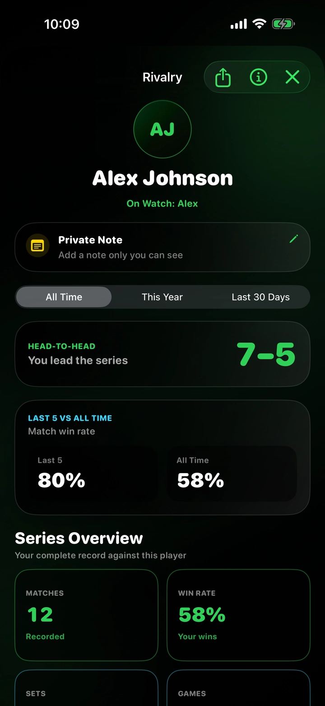
交手戰績與近期狀態 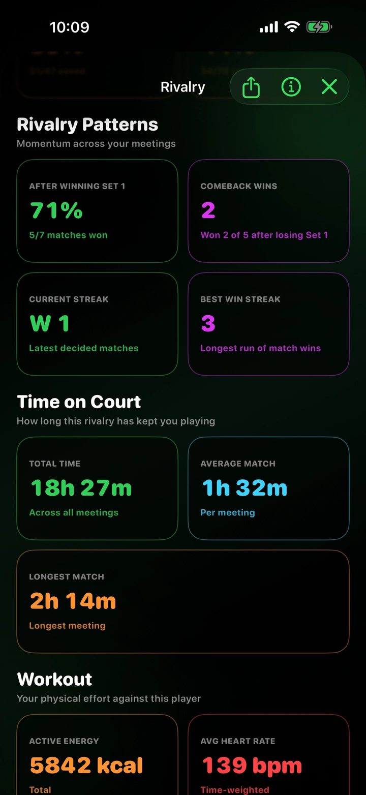
表現、規律與體能 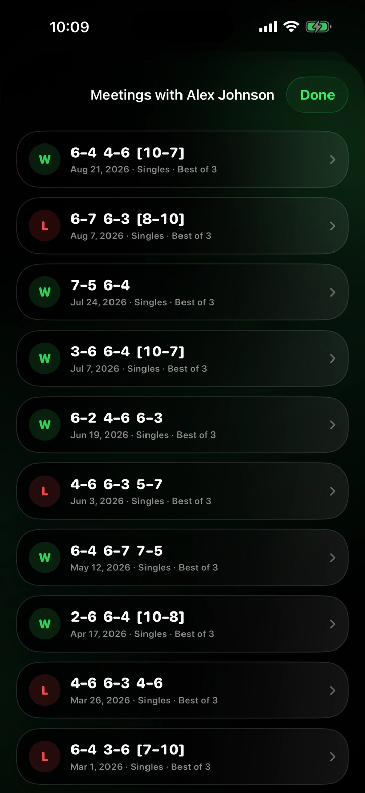
全部已儲存的交手 03 · 分享交手故事 三張卡片，一段完整故事。 分享順序固定為：戰績與近期交手、比賽表現、比賽規律與體能資訊。私密備註絕不會出現在分享內容中。
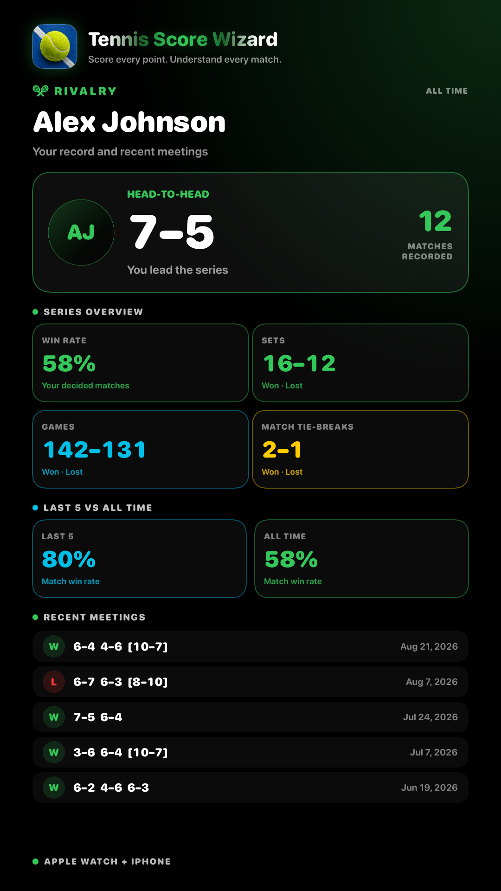
1 · 戰績與近期交手 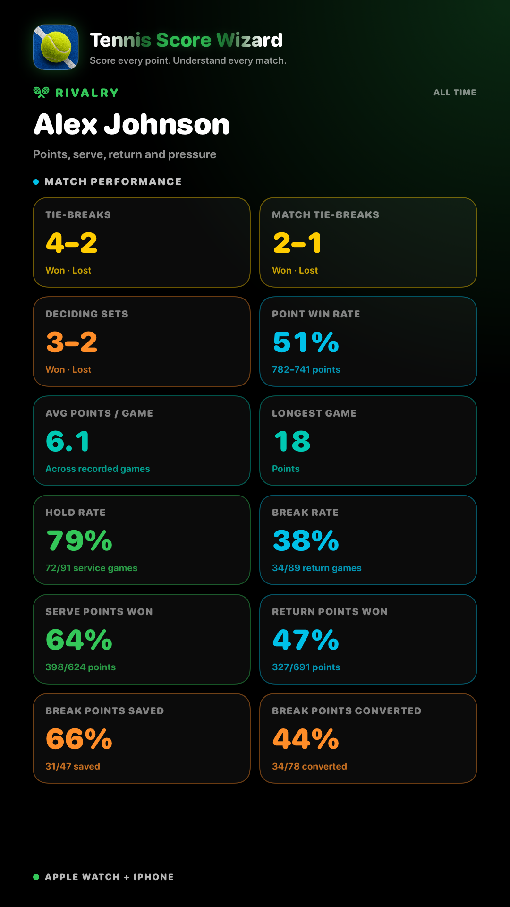
2 · 比賽表現 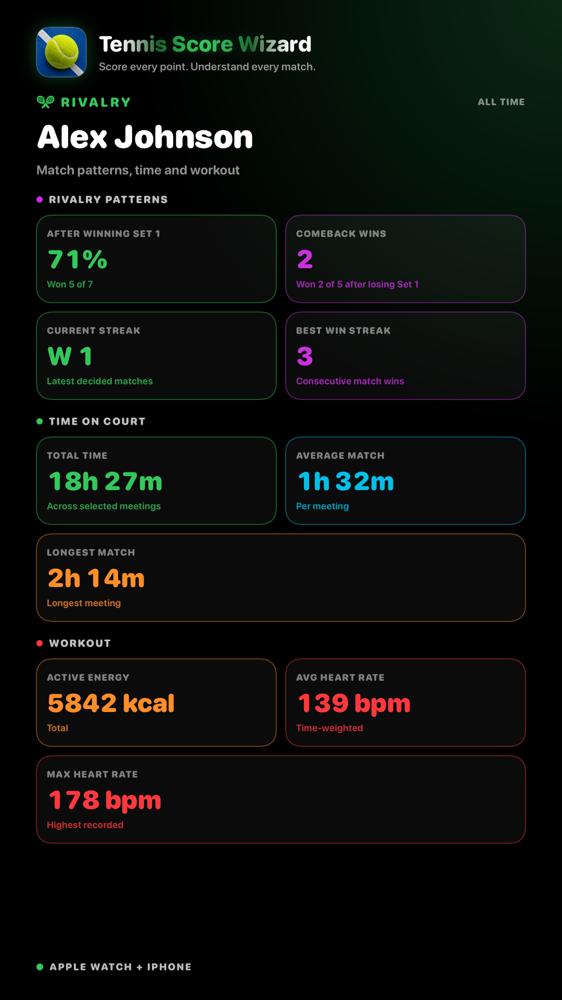
3 · 規律、時間與體能
隨時分享
分享的不只是比分
分享比分、最多六個適用亮點，以及可選球場條件和地點。佈局適應已有資料，私人備註不會進入卡片。也可分享表現和趨勢概要。
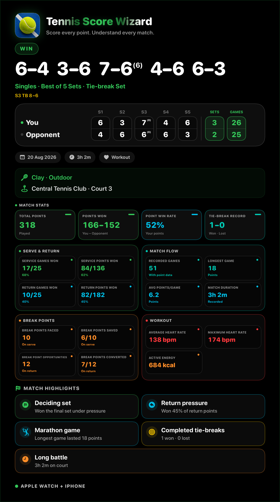
結果、球場，還有亮點。
為 Watch 記錄的比賽補充球場資訊，再保留原比分、時長和已有統計進行分享。球場資訊會顯示，私人備註不會。
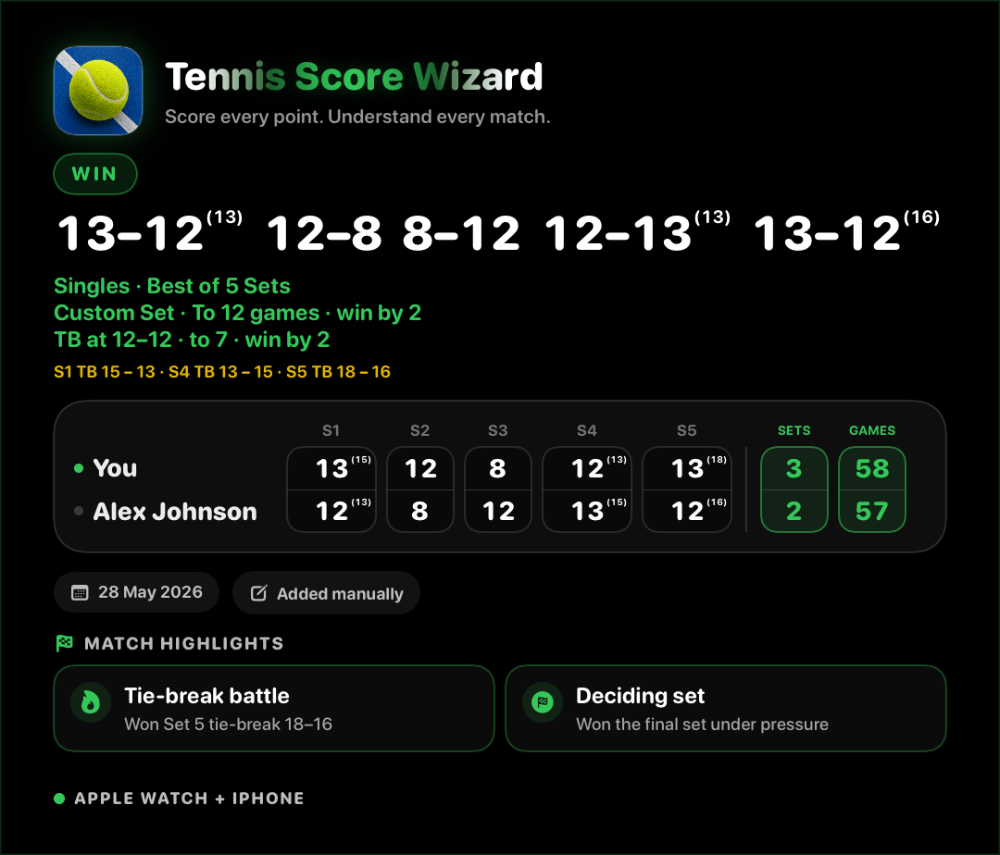
只記錄您知道的資訊。
手動比賽也有簡潔的結果卡片，展示盤比分和有資料依據的亮點，不會出現空白的訓練面板或編造的逐分統計。
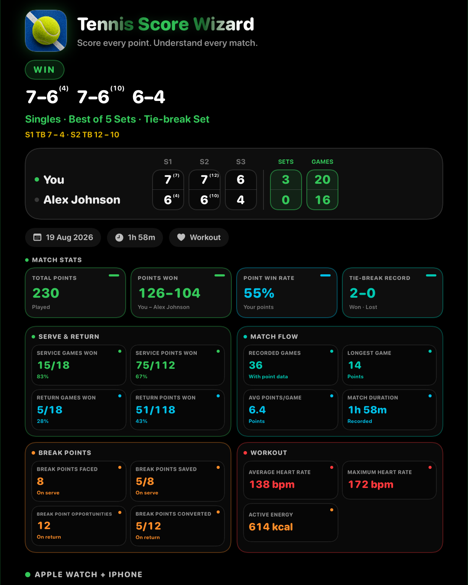
盤內搶七結果 緊湊上標讓主要盤分保持對齊，兩位數搶七同樣清晰。
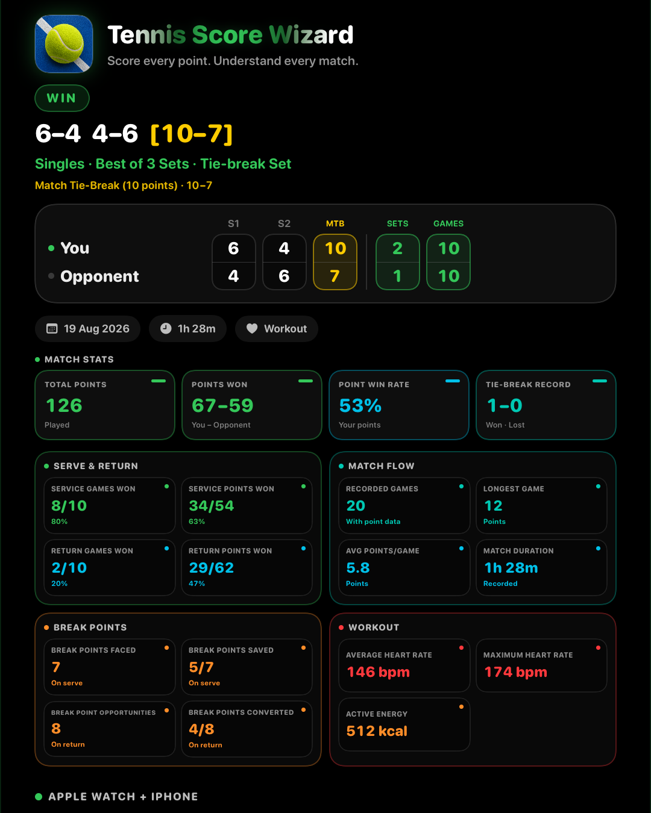
決勝 Match Tie‑Break 決勝 Match Tie‑Break 與常規盤分開，並清楚顯示為 [10–7 ]。
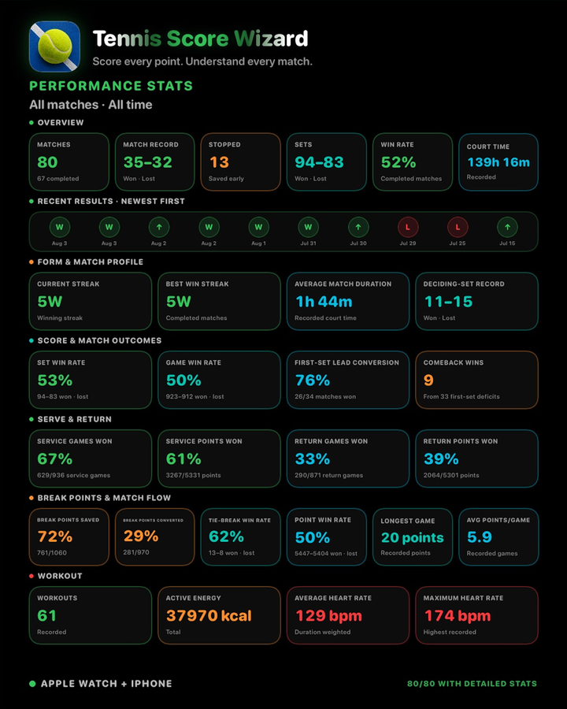
表現總覽 按當前選擇的時間範圍，以及全部、單打或雙打篩選條件匯出。
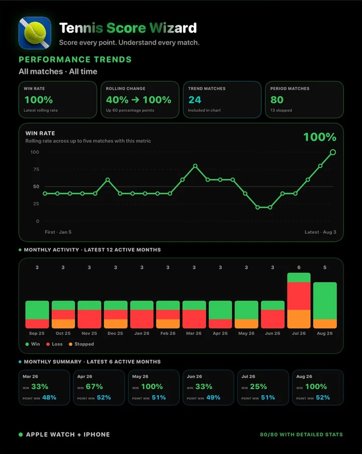
表現趨勢 將所選趨勢連同月度比賽活躍度和近期月度摘要一起分享。
您的比賽，您的故事，隨時分享。 將卡片分享至 Instagram，透過「訊息」或 WhatsApp 傳送，或從 iPhone 分享選單選擇其他 App。
Apple Watch 版 Standalone
您所需的一切，盡在腕間。
設定比賽、記錄每分得分、追蹤發球方和發球位置、可選記錄訓練資料，以及檢視歷史記錄和統計資料——所有操作均可在 Apple Watch 上完成，無需 iPhone。
Standalone 功能
在 Apple Watch 上享受完整的比賽體驗
設定比賽、記錄每分得分、可選地記錄訓練資料，並檢視歷史記錄和自動生成的統計資料，不需要 iPhone。
標準網球計分
使用大號可點選計分卡，自動記錄 0–15 –30–40 、平分、佔先、局、盤和搶七。
自動比賽統計
比賽結束後，History 可以顯示分數、發球、接發球、破發點、搶七和比賽走勢統計，這些都來自日常記分操作。
訓練記錄
可選擇將網球比賽作為體能訓練儲存到「健康」App，並檢視平均心率、最高心率和活動能量。
比賽控制
使用拋硬幣選擇先發球方、發球側提示、Switch Server、Undo、自動結束比賽和本地比賽歷史。
Standalone 相簿
Apple Watch 上的 Standalone
體驗完整的 Standalone 流程：比賽設定、訓練記錄、即時記分、搶七局、已結束的比賽、歷史記錄和自動統計資料——全部在 Apple Watch 上完成。
比賽設定
比賽開始前選擇單打或雙打、Best of 3 或 Best of 5，以及盤規則。
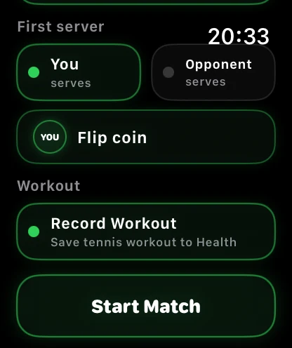
發球方與訓練
選擇先發球方，使用拋硬幣，開啟 Record Workout，並從同一螢幕開始比賽。
即時計分
透過大號卡片計分，同時檢視發球方、發球側、盤數、訓練狀態和即時心率。
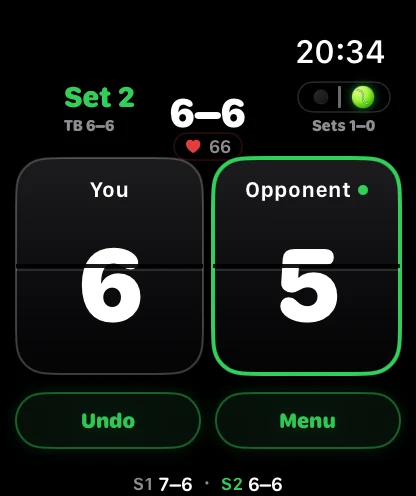
搶七
在 6–6 時，用同樣醒目、易操作的記分按鈕記錄搶七分數。
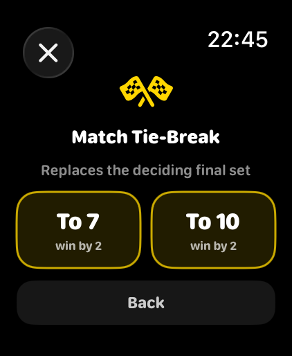
選擇決勝搶七/搶十 決勝盤開始前盤分持平時，可將該盤替換為 7 分制或 10 分制，並且必須領先兩分。
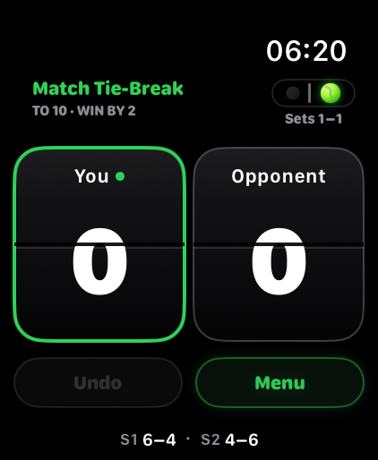
記錄每一分 目標分數、盤分、發球方和當前得分始終可見。
比賽結束
勝負確定後，應用清晰顯示一至五盤結果，並可快速進入歷史或完成。
歷史概覽
直接在 Apple Watch 上檢視勝場、負場、中止比賽、勝率和已儲存比賽。
比賽摘要
開啟已儲存比賽，檢視比分、局數、時長、總分、訓練狀態和比賽中止時的狀態。
盤數與搶七 在逐盤摘要中檢視每盤比分和已記錄的搶七比分。
比賽統計
檢視總得分、贏得分數、得分率和搶七戰績。
發球與接發
檢視發球局勝場、發球得分、接發局勝場和接發得分。
比賽走勢
檢視已記錄局數、最長一局、平均每局分數和比賽時長。
破發點 檢視面對、挽救、獲得和兌現的破發點。
訓練統計
已記錄的訓練可在比賽儲存後顯示平均心率、最高心率和活動能量。
從 Apple Watch 錶盤快速啟動
將 Tennis Score Wizard 新增到受支援的 Apple Watch 錶盤，輕點一下即可開啟應用。
角落圖示
將 Tennis Score Wizard 放在錶盤角落，比賽前一鍵啟動。
圓形圖示
將 Tennis Score Wizard 放在圓形區域，一點即可開始記分。
透過 iCloud 同步比賽 在 Apple Watch 和 iPhone 上檢視比賽歷史。 使用同一 Apple 帳號時，Standalone 與 Pro 可透過 iCloud 同步相同的比賽。每個帳號都有獨立的私有歷史。可以 Watch 記分，也能 iPhone 補錄；手動標記、對手關聯和比賽資訊都隨記錄傳輸。成功同步的比賽可在重新安裝後恢復。
Apple Watch 使用 Pro 或 Standalone 記分，並在“歷史記錄”中檢視最新同步狀態。
私密 iCloud 同步 成功同步的比賽記錄儲存在您的 Apple 帳號的私有 CloudKit 資料庫中，而不是 Tennis Score Wizard 的伺服器上。
✓ Synced
iPhone 在 Pro 補錄比賽、編輯球場資訊、檢視已記錄統計並檢查私有 iCloud 同步。
兩條獨立的同步路徑 Pro 可在配對裝置之間直接傳輸比賽；CloudKit 則獨立提供持久可靠的 iCloud 同步與恢復。兩條路徑中的任一條都可能先完成。
檢視同步狀態 “歷史記錄”會顯示 Synced 、Syncing 、Waiting / Saving 或 Sync paused / Retry 。
各帳號的歷史保持獨立 更換 Apple 帳號不會混合比賽歷史。上一個帳號尚未同步的比賽會儲存在加密的本地恢復副本中。
先記分，後恢復 即使無法使用 iCloud 也能繼續記分。成功同步的比賽可在使用同一 Apple 帳號重新安裝後再次下載。
版本對比
Watch 記分同樣完整，iPhone 記錄更加豐富。
Pro 在完整的 Apple Watch 記分應用之外，還提供 iPhone 比賽補錄、分析、對手交鋒與分享。Standalone 則無需 iPhone 應用，即可在手錶上完整記分。
完整的 Apple Watch 應用
✓ 包含
✓ 包含
比賽設定、即時比分、撤銷操作和發球指導
在 Apple Watch 上
在 Apple Watch 上
比賽歷史和詳細統計資料
在 Apple Watch 和 iPhone 上
在 Apple Watch 上
訓練與心率資料
在 Apple Watch 和 iPhone 上
在 Apple Watch 上
Apple Watch 複雜功能
✓ 包含
✓ 包含
對手資料與 Rivalries
在 iPhone 上建立和管理，並在 Watch 上選擇
在 Apple Watch 上選擇已同步的對手
按月和按年檢視比賽日曆
在 iPhone 上
不包含
可分享的文字摘要和圖片卡
在 iPhone 上
不包含
新增和編輯已打過的比賽
在 iPhone 上新增、編輯並同步到手錶歷史
透過 iCloud 接收手動比賽及修改
按年、月篩選 Watch 比賽歷史
✓ 支援
✓ 支援
球場資訊與私人比賽備註
在 iPhone 新增和編輯
隨同步比賽記錄保留
比賽亮點
iPhone 詳情顯示全部適用項，分享最多六個
Watch 上不顯示
基於已記錄逐分資料的 Match Flow
手錶 Momentum 和 iPhone 上的三種檢視
手錶上的精簡 Momentum
歷史報告與可恢復的備份
在 iPhone 上匯出和匯入
不提供
最適合
希望同時擁有完整 Apple Watch 應用和更大賽後檢視的球員
希望所有功能盡在腕間的球員
兩個版本共有 兩個版本使用相同的比賽分析。 One Set、Short Sets、No-Ad、Custom Set、自動統計、本地歷史、iCloud 和可選訓練記錄，兩版均包含。Pro 額外提供 iPhone 手動結果和賽後工具，即時逐分記分仍在 Watch。
比賽統計指南
兩款 Watch 應用從日常記分操作計算逐分統計，無需額外輸入 ACE、制勝分或回合長度。手動比賽貢獻已儲存的結果，不建立逐分或訓練資料。
分數
顯示總共進行了多少分，以及雙方各贏了多少分。分數差距很小通常說明比賽比盤分看起來更接近。
發球
顯示您在自己發球局中的表現。發球局是您發球的局；發球分是您發球時進行的單個分。
接發球
顯示對手發球時您的表現。贏下接發球局就是破發。接發球得分顯示您在對手發球時贏分的頻率。
破發點
挽救破發點是您在自己發球時頂住的破發點。兌現破發點是您在對手發球時贏下的破發機會。
比賽走勢
根據已記錄分數顯示比賽走勢：最長一局、平均每局分數、已記錄局數以及搶七戰績。
訓練
如果開啟 Record Workout 並授予 Health 權限，History 可以顯示已儲存網球訓練的平均心率、最高心率和活動能量。
快速示例
下面是賽後常見統計行的讀法。
分數 67–72
您贏了 67 分，對手贏了 72 分。差距很小通常表示比賽比盤分看起來更接近。
發球局 3/10
您在 10 局中發球，並贏下了其中 3 局。這表示您保發的頻率。
接發球局 6/11
對手在 11 局中發球，您完成了 6 次破發。
挽救破發點 4/11
您在自己的發球局中面對 11 個破發點，並挽救了 4 個。
兌現破發點 6/13
您有 13 次破掉對手發球局的機會，並成功了 6 次。
平均每局分數 6.3
每局平均約進行 6 分。數值越高，通常表示單局拉鋸更久。
舊比賽
自動統計推出前儲存的比賽可能沒有這些資料。手動比賽無論使用哪個版本，都沒有逐分統計。
隱私 比賽歷史儲存在本地。iCloud 可用時，已儲存的比賽還可以透過您的 Apple 帳號的私有 CloudKit 資料庫同步。存取「健康」資料是可選的，僅用於記錄體能訓練和顯示相關資料。
快速幫助
如何開始比賽？
選擇 Singles 或 Doubles，選擇 Best of 3 或 Best of 5，選擇盤規則，手動或透過拋硬幣選擇先發球方，可選擇開啟 Record Workout，然後開始計分。
如何記錄訓練？
在設定時開啟Record Workout。如果允許存取「健康」資料，比賽可以作為網球體能訓練儲存到「健康」App。
即時心率如何工作？
允許訪問且 Apple Watch 提供心率資料時，記錄體能訓練期間會顯示即時心率。
Menu 有什麼作用？
比賽進行中，Menu 可訪問 Switch Server、停止未完成比賽、開啟歷史記錄或開始新比賽等操作。
Undo 如何工作？
Undo 會撤銷最後記錄的一分，並恢復之前的比賽狀態，包括分數、局數、盤數、發球方、發球位置、搶七狀態和統計計數器。
發球標記如何工作？
當您發球時，網球圖示會提示您應該從哪一側發球。當對手發球時，它會從您的手錶視角提示對手的發球側。
理解比賽歷史
兩個版本均可在 Apple Watch 上顯示已儲存的比賽結果。Pro 版還將相同的比賽歷史記錄同步至 iPhone，以便在更大螢幕上檢視。
Win 和 Loss 是什麼意思？
Win 表示您按盤數贏下了已完成比賽。Loss 表示對手按盤數贏下了已完成比賽。
Stopped 是什麼意思？
Stopped 表示比賽在正常結束前被儲存。App 會保留真實比賽上下文，包括盤、局、時長、分數和已收集統計。如果停止時一方領先，結果會計入勝負記錄、勝率和連勝或連敗；停止時仍為平局的比賽按中立結果處理。
S1、S2、S3 是什麼？
S1、S2、S3 表示第 1 盤、第 2 盤和第 3 盤。例如 S1 6–3 表示第一盤以 6 比 3 結束。
TB 7–3 是什麼意思？
TB 表示 7–6 盤中的搶七分數。例如 7–6 · TB 7–3 表示該盤 7–6 獲勝，搶七比分為 7–3 。
7–6 (6) 表示什麼？簡略結果行的小括號數字表示搶七失利方的分數。這裡搶七是 8–6 。分盤表格可在已記錄時顯示雙方分數。
中止比賽如何判斷？
先比較已完成的盤數；相同時比較當前未完成盤的局數，再比較已記錄的搶七或局內分數。不會累計之前各盤的局數來判斷領先。盤間中止且雙方獲勝盤數相等時視為平局。若有明確領先方，統計中計為勝負，但保留中止標記。
未完成的一盤會怎樣？
對於中止比賽，如果當前未完成的一盤已有進展，也會儲存，以保留真實比賽上下文，例如 S3 0–1 。
比賽已經結束？仍然可以補錄。
手動新增的比賽可以編輯嗎？ 可以。開啟比賽詳情，輕點「編輯比賽」，即可修改日期、時間、時長、規則、各盤比分、搶七分數和結束狀態。Save 會更新現有記錄，不會生成副本；Cancel 會放棄修改。此表單不會更改單打或雙打型別，也不會更換球員。對手關聯和球場資訊請透過各自的入口修改。
可以在打完後新增比賽嗎？ 可以。在 iPhone 的 Pro 中選擇新增已進行的比賽，填寫比分，選擇完整結束或中途停止，並補充記得的時間。儲存的結果可以同步到兩款 Watch 應用。
可以儲存平局嗎？ 可以。如果在勝者確定之前停止比賽，請選擇中止。無需編造決勝盤，也能儲存平局。
可以補充舊比賽的資訊嗎？ 可以。在 iPhone 開啟比賽詳情，新增或編輯比賽資訊。Watch 記錄的原比分、時間和統計不會改變。
修改對手或比賽資訊後會發生什麼？ 更換對手會更新關聯的球員及相關交鋒頁面。基於歷史的亮點使用當前儲存的記錄。可選的球場資訊和私人備註不會產生新的統計成就。
手動錄入指南 → 球場資訊與隱私 →
常見問題 App 會收集個人資料嗎？ App 不需要 Tennis Score Wizard 帳號，也不使用廣告跟蹤器。Tennis Score Wizard 不運營比賽歷史伺服器。歷史會儲存在本地；iCloud 可用時，還可以透過您的 Apple 帳號的私有 CloudKit 資料庫同步。
必須允許存取「健康」資料嗎？ 不需要。存取權限是可選的。即使不記錄體能訓練，也可以正常為比賽記分。
生成比賽統計需要額外操作嗎？ Watch 統計來自常規記分操作。手動比賽只反映已知結果，不編造逐分過程、心率或訓練。應用不要求輸入 ACE、制勝分、非受迫性失誤或回合長度。
可以用於單打、雙打和搶七嗎？ 可以。App 支援單打、雙打、三盤兩勝、五盤三勝、長盤制和搶七盤。
可以刪除比賽歷史嗎？ 可以。您可以在“歷史記錄”中刪除已儲存的比賽。iCloud 同步可用時，刪除操作也會同步。
交手記錄如何生成？ 先在 iPhone Pro 中建立對手，在 Apple Watch 開始單打比賽前選擇該球員，然後照常記分。Tennis Score Wizard 會把儲存的比賽關聯到該球員，並自動整理交手戰績、近期狀態、表現、比賽規律、上場時間、體能資料和全部對陣歷史。Standalone 可以使用透過同一 Apple 帳號同步的球員檔案。選擇「訪客」則不會把比賽計入交手記錄。
隱私 您的比賽歷史保持私密。 比賽歷史儲存在本地，並可透過您的 Apple 帳號的私有 CloudKit 資料庫同步。Tennis Score Wizard 不運營比賽歷史伺服器，不出售比賽資料，也不會將其用於廣告。
存取「健康」資料是可選的，僅在您授權後用於記錄網球體能訓練和顯示可用的訓練資料。
閱讀隱私政策
獨立開發者 支持 Tennis Score Wizard 持續進步。 Tennis Score Wizard 由一位獨立開發者設計、開發和維護。如果它對您的比賽有所幫助，您可以自願支援 App 的持續開發。
使用 Apple 帳號關聯的付款方式提供一次性贊助，並透過 Face ID 或 Touch ID 安全確認。
小額贊助 App Store 比賽用球 App Store 贊助者 App Store
可在 App 內使用：Info → Support Development。 直接向經過驗證的專案錢包傳送自願支援。幣種旁始終會標明對應網路。
點按幣種可複製地址，也可以開啟二維碼。USDT 和 GRAM 無需填寫 memo。 支援完全出於自願，不會解鎖任何 App 功能或數字內容。傳送前請務必核對錢包地址和網路。